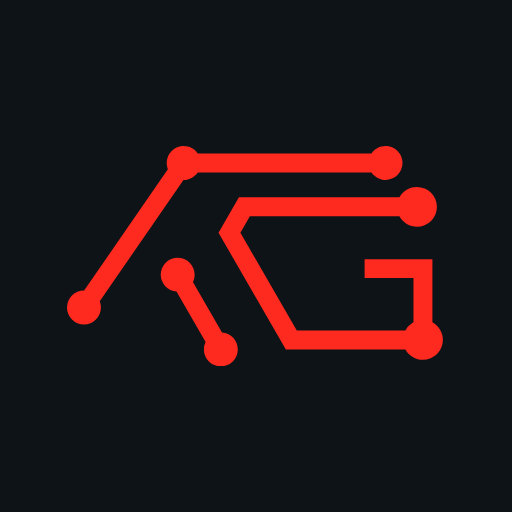

Archgen Labs
What they do
Archgen builds Newton, an AI agent for chip physical design. It reads timing and DRC reports, patches the flow and reruns — for single dies and 3D-stacked chips. Their placement engine ranked #1 in Hudson River Trading's macro-placement challenge.